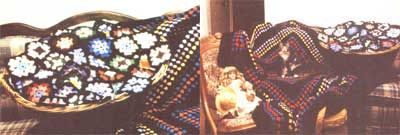
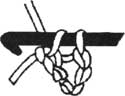
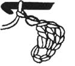
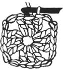
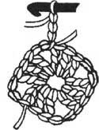
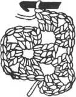
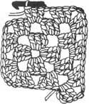

HANDWORKS
Make your own giant afghan to curl up in this winter.
Outside, snow is swirling to the ground, adding an unknown number of inches to the crusty snow left over from the last storm. Wrapped in my shawl, I collect another armful of wood for the hungry stove, and wonder if you're enjoying the shawl you made from last issue's pattern. Hopefully, it has started to become a part of your every day life. You've probably even discovered some new uses for it that I hadn't mentioned. I'm sure you feel proud of your ac complishment, so let's forge ahead and make a new project...
Now that you have the tools, ability, and most important, the confidence to create more handwork, I want to share a pattern with you that boasts versatility. This one pattern can be used to create endless variations. After all, when you decorate with crocheted items, there are no rules; your imagination is the only limitation. So be daring: try different color combinations and make different sizes. Your hook flies, the colors blend, and the thread melds into a beautiful new creation. Once you get started making homespun items, your house will never look the same.
Arranging these handmade pieces throughout your home will not only give it a warm and welcome feeling, but will literally keep your family and friends warm. As you add your creations to a plain room, you can watch the room transform into a country garden of simple elegance. Just by using the colors of your choice, you can actually change a room's atmosphere-you may even find your mood uplifting as you enter a room.
What better way to start adding colorful ac cents to your home than with a beautiful afghan? This colorful blanket, fashioned from yarn, is crocheted or knitted from strips or squares. The most traditional version is the granny-square afghan. It's easy to do, but gives a finished look that will leave people raving. Make one to throw on the back of your couch so you can wrap it around yourself while watching a movie or reading a good book. Or leave it folded at the end of your bed so you'll be ready when you need some extra warmth on frosty evenings.
One of the best parts about crocheting an afghan is that you can pass it down through generations-unless of course your afghan meets the same fate of the one I made over 20 years ago. My daughters' old tom cat (appropriately named "Tom") would frequently pull the black, red, orange, and yellow afghan off the back of the couch, curl up in it, and fall right asleep. One morning I took it up to refold it and found several gnawed holes. Although I repaired it, he found it and took his teeth and claws to it again. For the next few weeks, no matter where I put the ill-fated afghan, Tom would find the darn thing-until there was no mending left to do. The reason for this afghan obsession evades me; I'm just thankful that Tom only craved this one project, since all the other crocheted items are left untouched.
Pillows are another colorful addition to any room. Toss them on chairs, couches, and the family room floor (kids love hanging out on giantfloor pillows). Covering couch pillows that have seen better days is a good way to bring new life to those you thought were ready for the dump. And don't forget the bedroom; to me, a bouquet of crocheted pillows displayed on a bed is like having a summer garden year-round.
Perk up your kitchen with bright coasters, pot holders, placemats, and chair pads. One granny square makes a coaster, two squares (with quilted material sandwiched in between for padding) makes a pot holder, 12 small squares sewn together will make useful placemats, nine medium-size squares will make durable chair pads for your kitchen chairs. How about a welcome mat or scatter rug? Use two or three strands of four-ply yarn held together to make a thick, heavy rug. Working with several different colors held together gives a tweed-type look. Sew a piece of heavy burlap on your rug to make it more durable, and then glue some rubber strips on the bottom to make the rug nonskid. By using coordinating colors, you'll pull your new accessories together for a finished look.
You can either make colorful granny squares by using a different color for each round or by using three different colors for the first three rounds and same color for every fourth round. For example, use three vibrant colors for the first three rounds and then black for the fourth. Using black for your background will make the colors even more striking; using a different color for every round will create a virtual rainbow. Or work round after round with one color until you're bored with it, then change to whatever new color inspires you. You can make the afghan as large as you like; just keep crocheting until you feel the size is right.
My Gramma kept an old steamer trunk filled with granny squares. As a child, I would often spend some of my summer vacation with her. When I was bored, Gramma would send me to her "treasure chest" (that's what she called her steamer trunk), and I would pick out "grannies" and spend hours making different projects. Soon the day was spent and it would be time to fix supper. There never seemed to be a lack of things to do at Gramma's, and I always had something that I made to bring home with me. As I got older, Gramma showed me how to make my own grannies. That's when I began my "treasure chest:" I don't have a steamer trunk yet, but I do have my own version: a wicker laundry basket. My daughters, Delilah and Violet, are competent granny-square makers too, and we are constantly making more grannies to replace used ones, so we always have a substantial supply on-hand.
Figures 1, 2, 3: Rnd 1: ch 6, join last ch to first with a slip stitch to form a ring. Ch 3 to count as first dc, work 2 more do in ring, ch 2 for corner. Figure 4: Work 3 dc, ch 2, until you have a total of 4 groups. Join with sl st into top of starting ch 3 Figure 5: Rnd 2: Join new color in any ch 2 corner space. Ch 3 for first dc. Note: To continue working with the same color, sl st over the 3 do and in the ch-2 corner, then ch-3 for first dc. Figure 6: In same corner, work 2 dc, ch 2 3 dc. *Ch 1, in next ch 2 corner space work 3 dc, ch 2, 3 do to make another corner. Repeat from " twice more, ch 1, join with sl st into top of starting ch 3. Figure 7: Rnd 3: Join new color in any ch 2 corner (or if using the same color, sl st to the ch 2 corner space.) Ch 3 for first dc, 2 dc, ch 2, 3 do for corner. Ch 1, work 3 do in ch 1 space, ch 1, work another corner as before. Continue around the squares in this fashion until all four sides are completed. Join with sl st into top of starting ch 3. You've completed three rounds.
You can involve your own kids by letting them sew squares together. Just give them the basic directions and then let them create. You may be surprised at the original inventions they come up with. My sons, Alexander and Demetrius, made wonderful presents for Grandparent's Day. Alexander made an eyeglass case for his Grampa, using four squares and some felt as lining. Demetrius used two squares, felt for lining, and polyfill stuffing to create a pincushion for Gramma. Of course their grandparents were delighted and gushed over the boys' accomplishments.
You can ask your whole family to participate in the crochet projects you embark on. Choosing colors is enjoyable, and even more so when it's a family decision (especially if it will be used in the family room). Select yarn in your children's favorite colors and make an afghan with matching pillows. Your labor of love will be a special keepsake for years to come.
Size: About 60" square.
Materials:
•4 ply worsted weight yarn
• 3 skeins black
• 2 skeins each: white, dark red, royal blue, forest green, sunny yellow, deep purple, and lavender
Size I aluminum crochet hook
Color Pattern
•Rod 1 through 6: Arranging colors as desired, work each round in a different bright color.
•Rnds 7 and 8: Work in black. •Rnd 9: Work in white.
•Rnds 10 and 11: Work in black.
•Rnds 12-23: Work each round in a different bright color.
•Rnds 24-28: Repeat rounds 7 through 11.
•Rnds 29-40: Work each round in a different bright color.
•Rnds 41-45: Repeat rounds 7 through 11.
•AFGHAN: Ch 6, join with sl st to form ring.
•Rnd 1: Ch 3 for first dc, work 2 do in ring, ch 2 for corner, (3 do in ring, ch 2) 3 times, join with sl st to top of starting chi. Cut yarn.
•Rnd 2: Join new color in any ch 2 corner, ch 3 for first dc, in same space work 2 dc, ch 2, 3 do for starting corner, ch 1, (in next ch 2 space work 3 dc, ch 2, 3 dc, ch 1) 3 times, join with sl st to top of turning ch. Cut yarn.
•Rnd 3: Join new color in any ch 2 corner, ch 3 for first dc, work 2 dc, ch 2, 3 do in same space, * ch 1, 3 do in next ch1 space, ch 1, in corner work 3 dc, ch 2, 3 dc; repeat from * 2 times more, end ch 1, 3 do in next ch 1 space, ch 1, join with sl st to top of starting ch 3. Cut yarn.
•Rnd 4: Join new color in any ch-2 corner, ch 3 for first dc, in same space work 2 dc, ch 2, 3 dc, *(chi, 3 do in next ch 1 space) 2 times, ch 1, in corner work 3 dc, ch 2, 3 dc; repeat from * 2 times more, end (ch 1, do in next ch 1 space) 2 times, ch 1, join with sl st to top of starting ch. Cut yarn.
•Rnd 5: Join new color in any ch 2 corner, ch 3 for first dc, in same space work 2 dc, ch 2, 3 dc, *ch 1, work 3 dc, in next ch 1 space; repeat from * to next corner, ch 1, in corner work 3 dc,ch 2, 3 dc. Continue around in this pattern, join with sl st to top of starting ch 3.
•Rnds 6-45: Following color pattern, continue working as established, having one more 3 do group between corners on each round.
•Finishing: When desired size is reached, cut yarn, fasten off and weave in all loose ends.
Size: Approximately 39" square
Materials:
•3 ply baby yarn
•4 skeins yellow
•3 skeins each pastel blue and peach
•2 skeins lilac
•1 skein white
•Aluminum crochet hook, size D
Starting at center with first color, ch 4, join with sl st in first ch to form ring.
Work in same fashion as for the basic granny square, changing colors as desired, until you have approximately a 39" square.
Finishing: When desired size is reached, cut yarn, fasten off, and weave in all loose ends.
Fringe: Cut four 6" lengths of yarn, fold in half. Draw fold through each ch 1 and corner space of afghan. Bring ends through loop and tighten. Repeat fringe in each across. Trim ends evenly.
Size: Adjustable
Materials:
•4-ply worsted weight yarn
•12 or more ounces of black
• Assorted colors for multicolored squares
•Aluminum crochet hook, size H
Granny Square:
Make desired amount of squares, changing colors for each round. For a classic multicolored afghan, use black for rnd 4 throughout.
Ch 6, join with sl st to form ring.
•Rnd 1: Ch 3 for first dc, 2 do in ring, ch 2, (3 do in ring, ch 2) 3 times. Join to top of ch 3. Cut yarn.
•Rnd 2: Join new color in any ch 2 space, ch 3 for first dc, in same space work 2 dc, ch 2, 3 dc, (ch 1, in next corner work 3 dc, ch 2, 3 dc) 3 times, ch 1, join to top of starting ch. Cut yarn.
•Rnd 3: Join new color in any corner, ch 3 for first dc, in same space work 2 dc, ch 2, 3 dc, *ch 1, 3 do in next ch 2 space, in corner work 3 dc, ch 2, 3 dc; repeat from * 2 more times, end ch 1, 3 do in next ch 2 space, ch 1, join to top of starting ch. Cut yarn.
•Rnd 4: Join new color in corner, ch 3, for first dc, in same space work 2 dc, ch 2, 3 dc, *(ch 1, 3 do in next ch 1 space) 2 times, ch 1, in corner work 3 dc, ch 2, 3 dc; repeat from * 2 more times, end (ch 1, 3 do in next ch 1 space) 2 times, ch 1, join to top of starting ch.
Finishing: Work in all loose ends using a tapestry needle. Sew squares together working through one or both loops as desired. For a smoother edge, work 2 rnds of sc around entire afghan.
TIPS
•Variegated yarn is a lot of fun to work with when making the baby or the giant granny afghan. The color changes for you as you work, which makes a nice pattern without cutting and joining new colors.
•Put a drop of clear fingernail polish on knots and let it dry in order to seal them.
•For a more finished look, work a single crochet evenly around the outside edge or work in double crochet for a different look.
•For pillows and afghans, you may add fringe at the corners or all the way around.
•Wash your crocheted item using the directions on the label of the skein of yarn.
With Spring around the corner and warm weather on the way, it's a good time to mention that crocheting isn't just for winter. However, it isn't the time to put away your crochet hook; it's time to learn how to make things with a finer thread called "crochet cotton:" This cotton, which looks like string and comes in a variety of colors, can be purchased in different weights (which actually means that they come in different plys, like yarn). So start thinking about doing projects that you can easily carry along during the busy summer months.
One of my favorite items to make is dishclothes (no kidding!). When people hear that the colorful item that I'm fashioning is a dishcloth, and will be used to wipe up pots and pans, they say "What! It's way too pretty to use for something like that:" Well, maybe they think so, but I have never owned a storebought dishcloth that lasted near as long as my handmade ones. In fact, the storebought ones usually end up thrown in our barn rag-bag. Handmade dishclothes clean better and you may even find that you don't need to use brillo pads, which often take the finish right off of your pans and kettles, and also hurt the environment.
To make a dishcloth, use crochet cotton, a small size steel or aluminum hook, and the exact same pattern for the granny square listed in the article. Keep crocheting until the square becomes whatever size you like.
In addition, you may want to make a bunch of small accent doilies to place around your home. All you have to do is sew a few small granny squares together so that they'll fit your end tables, or drape them gracefully on the back of a couch or chair.
|
 Although Tom, Ella Jean's tomcat, constantly tried to devour one of the writer's colorful afghans, Elvis (Tom's son) seems to take comfort in them. |
 Figure 1 |
Figure 2 |
|
 Figure 3 |
 Figure 4 |
 Figure 5 |
|
 Figure 6 |
 Figure 7 |
|